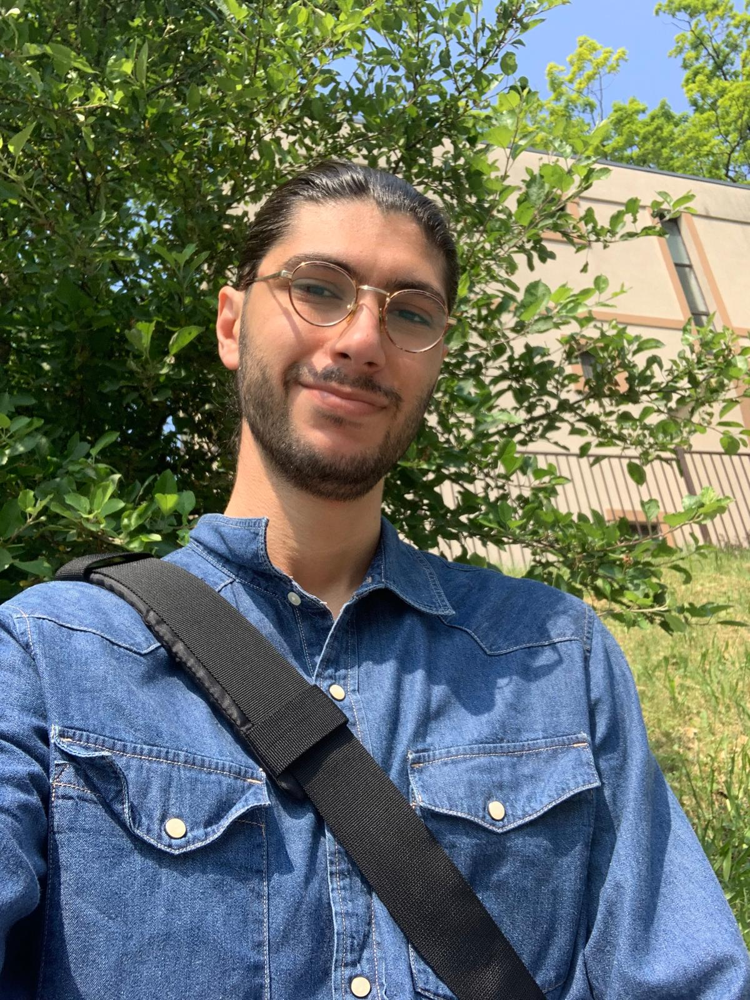

Siraj El Boukaily
Contact me
✉️☎️
Executive Summary
I am a marketing research analyst graduate, proficient in market research methodology and data analysis.
Throughout my program, I acquired a solid understanding of marketing and gained good project management
skills. I am eager to turn my academic knowledge into real-life experience while making valuable
contributions to the team.
Highlights Of Qualifications
Knowledgeable in Qualitative and Quantitative research techniques, data collection, sampling, and
experimental design
Exhibit strong project management skills.
Proficient in using Qualtrics to design and analyze online surveys.
Have a good knowledge of the SAS analytics tool.
Possess an innate curiosity for acquiring new knowledge
Demonstrate expertise in SQL, Java, and JavaScript programming.
Possess a strong command of the English language, with the ability to communicate effectively and
professionally in both written and verbal forms.
Education And Training
Marketing - Research and Analytics Graduate Certificate, Centennial College, Scarborough, ON,
Canada
January 2023 – August 2023
Bachelor’s, Computer Science, Lebanese International University, Beirut, Lebanon
January 2022
Freshman, Computer Science, Lebanese University, Hadat, Lebanon January 2021
Experience And Accomplishments
- Project Associate Intern, Think Media Labs September 2022 – December 2022
Tracked and communicated project status to clients through weekly reports.
Designed engaging ads for multiple social media platforms using Canva.
Created weekly creative push notifications that increased user engagement.
Scheduled meetings with content writers, delegated tasks and oversaw the results.
Conducted weekly internal testing for three apps.
Scheduled weekly social media posts.
Conducted weekly research on various topic areas.
Designed diagrams and dashboards that were used in client presentations.
-
Research Intern, Diaries of the Ocean April 2022 – May 2022
Conducted Research on topics related to oil spills and renewable energy in Lebanon.